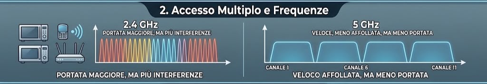
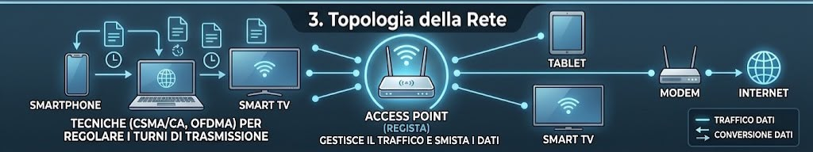

Il Wi-Fi permette a smartphone, PC e altri dispositivi di scambiare dati senza l'uso di cavi, sfruttando le onde elettromagnetiche (onde radio). I dati digitali (bit 0 e 1) vengono convertiti in segnali radio dall'antenna del dispositivo trasmittente e inviati nell'aria. Quando questi segnali raggiungono l'antenna del dispositivo ricevente, vengono decodificati e riconvertiti in dati intelligibili.
Le reti Wi-Fi operano principalmente su tre bande di frequenza: 2.4 GHz (con una portata maggiore ma più soggetta a interferenze), 5 GHz (più veloce e meno affollata, ma con una portata inferiore) e la nuova banda a 6 GHz introdotta dai recenti standard per evitare del tutto la congestione. Per evitare che i dispositivi "parlino" tutti insieme creando caos, il protocollo 802.11 usa tecniche di accesso multiplo (come il CSMA/CA e l'OFDMA), che regolano i turni di trasmissione assicurando che il canale sia libero prima di inviare i pacchetti.

Nella maggior parte delle reti domestiche e aziendali, la comunicazione avviene in modalità Infrastruttura. Questo significa che i vari dispositivi (detti Client) non comunicano direttamente tra loro, ma si collegano a un punto centrale chiamato Access Point (solitamente integrato nel modem/router di casa). L'Access Point fa da regista: riceve le richieste dai dispositivi, gestisce il traffico e smista i dati verso la rete internet o verso altri apparecchi collegati alla stessa LAN wireless.
